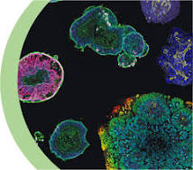
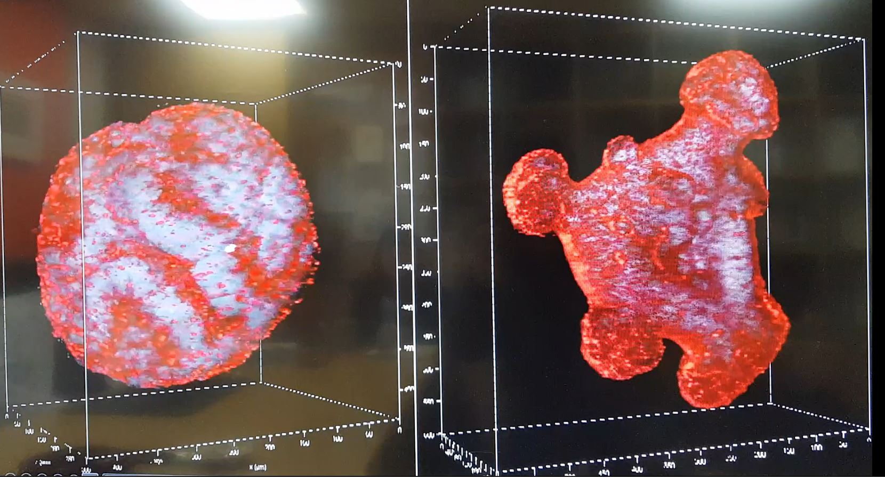

home
기술소개
기술 활용 사례

오가노이드 AI기술
3312 원혜영
오가노이드 소개 영상
개발 시기
오가노이드에 AI기술을 접목한 이 정보기술은 최근 개발되기 시작해
2023년부터 활발하게 연구 성과가 보고되고 있다.
특히 지난 10년동안 AI 기술의 발전과 함께 더욱 주목 받기 시작했다.
개발 배경 및 목적
오가노이드 AI 기술은 AI 기술의 개발 중, 인간의 뇌와 같이 복잡한 문제는 해결하기 어렵다는
한계점에 맞닥뜨리게 되면서 이를 해결할 수 있는 혁신적인 방안을 모색하다가 개발되기 시작했다.
인간 뇌의 구조와 기능을 흉내낼 수 있는 뇌 오가노이드와 AI 기술을 결합하게 된 것이다.
기술 특징
1.인간의 뇌 오가노이드를 이용해 알고리즘 개발
따라서 AI가 인간의 뇌처럼 창의적인 아이디어 생산. 복잡한 문제 해결.
2.대뇌 오가노이드(인간유도 만능 줄기 세포에서 유래된 3차원 조직모델)를 이용
따라서 뇌의 복잡성 이해 및 모방 가능. 인간 뇌와 유사한 네트워크 형성 후, 뇌의 작동 메커니즘 이해 가능.
3.뇌의 신경세포, 신경교세포, 혈관세포 등을 조합해 인간 뇌와 유사한 네트워크 사용
따라서 AI에서 일어나는 과정과 인간 뇌의 일을 유사하게 만들기 용이.
4.AI 모델을 뇌 오기노이드와 연결해 학습데이터 제공 후, 오가노이드의 신경세포 활동을 모니터링.
기술적 가치
1.기존 AI 기술의 한계점 극복
2.다양한 분야에서 혁신적 해결방안 제시
3.동물실험 대체 가능
4.뇌 질환 연구, 신약 개발 등 여러 의료분야 발전에 도움
오가노이드의 기술적 가치
동물 실험 대체

인공장기, 바이오컴퓨터의 개발
뇌 오가노이드를 컴퓨터에 연결해 학습데이터 입력
수학 방정식 풀기 성공
일반 AI보다 속도 빠르고 성능 좋음.
오가노이드 페이지
지금까지 오가노이드 기술에 대한 소개 페이지였습니다. 감사합니다.
read more